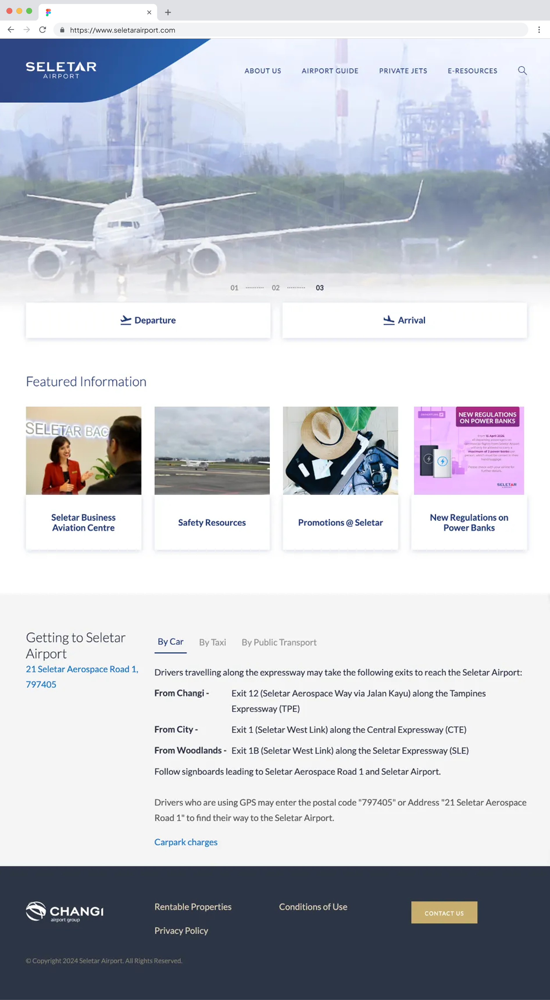
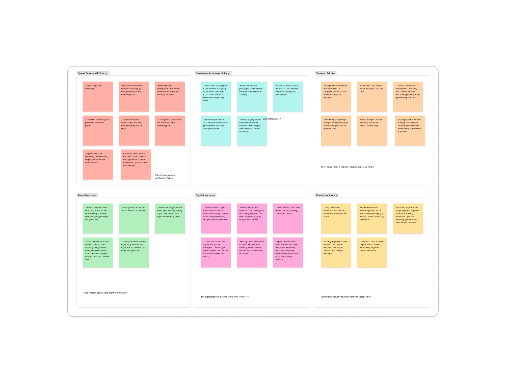
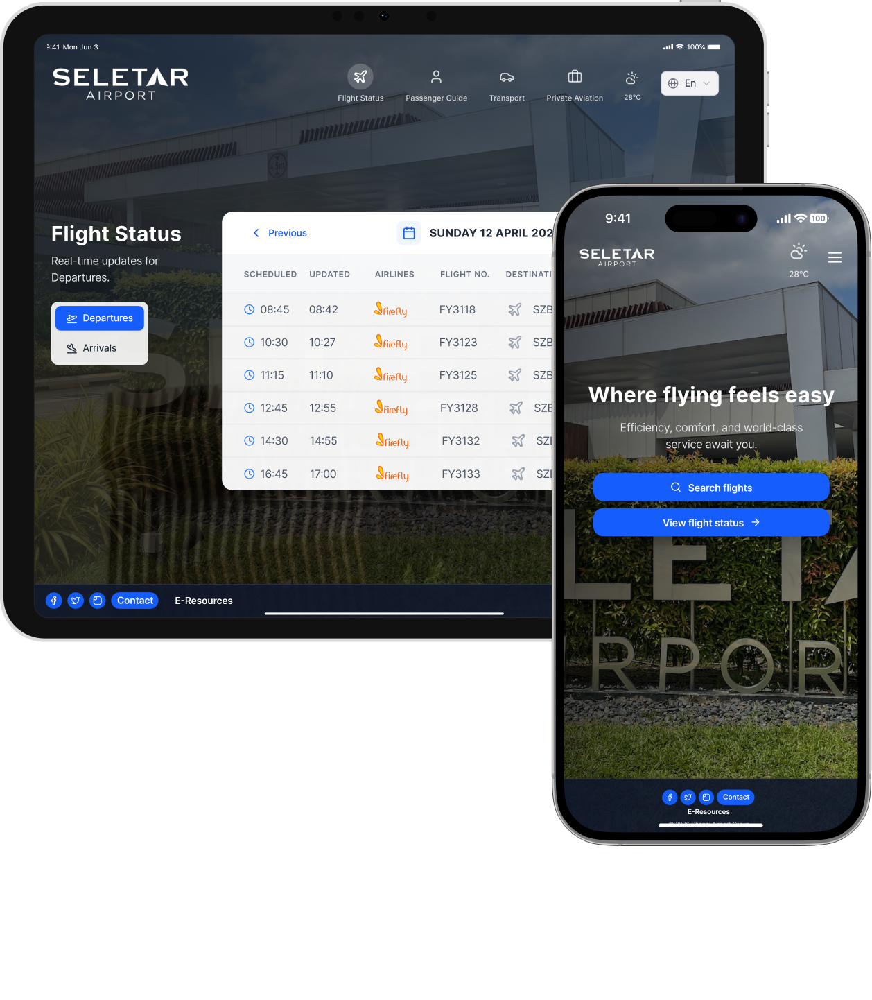

I led research. Every user interview, the testing framework, the call to kill V1.
01 The Problem
Nobody was using the airport's website. They were going to Reddit instead — searching for departure tips, transport options, and what Firefly actually flies.
I interviewed 9 passengers. Every single one had chosen Seletar for the same reason: it saves them 45 to 90 minutes compared to KLIA.
9
User interviews
8 Firefly passengers, 1 private jet traveller. Recruited in two weeks.
100%
Chose Seletar for time
Not loyalty. Not price. Speed — every single time.
0
Used the official site
Not one. Reddit was doing the airport's job for it.

The official website. Not one of 9 passengers had ever opened it.
02 Research
The speed advantage — Seletar's entire competitive edge — was invisible online. Not one of the 9 had ever opened the official website to plan their trip.
This reframed the project. We weren't solving a design problem. We were solving a communication problem.
"Seletar's product is speed and ease. Anything that creates confusion or uncertainty breaks that promise."

Interview synthesis — the brief Andrea Lee handed to the design team
Every transport option on the site assumed the user was going to the airport. Nobody had designed for someone arriving and trying to get home. The moment we named it, the fix was obvious.
03 The 3.0 Failure
3.0
/5 · SEQ score · V1 Passenger Guide"We cut the section we'd spent two weeks building."
The team designed a whole section explaining turboprop aircraft — what they are, how they fly. My Round 1 testing showed nobody wanted it.
V1 Passenger Guide · SEQ 3.0/5 · One participant opened it. Out of aviation curiosity, not travel anxiety. We cut it.
04 The Decision

Visual design by Danna, informed by my research direction.
"Check Status"
→ renamed to
"View Flight Schedule"
SEQ: 4.3 → 4.8 · Confirmed in two days
"Check Status" made users hesitate every time. Watching structured sessions, I saw the same pause — they thought it meant booking confirmation, not a live schedule.
I renamed it "View Flight Schedule." Single Ease Question score: 4.3 to 4.8. Language is never a detail. The label was the design.
05 Outcome

Visual design by Danna, informed by my research direction.
4.8/5
Final ease-of-use scoreUp from 4.3 in Round 1
+0.5
SEQ improvementAcross two test rounds
9
Interviews I ranPlus 6 on-site in Round 2
"Brilliant — 5 out of 5."
06 Reflection
The bravest output is a cut
I recommended removing a section the team had already designed and built. Turboprop education scored 3.0/5. I said so, out loud, in the synthesis session. Research influence means being willing to say "this didn't work."
A single word is a research finding
"Check Status" versus "View Flight Schedule" — the difference between a hesitating user and a confident one. I found it by watching people pause in structured sessions. One rename. SEQ: 4.3 to 4.8. Language is design.
Research earns its seat by sharpening the brief
My most important output wasn't a report. It was the reframe: Seletar's product is speed. Design to protect it. Every cut, fix, and rename that followed was easier because of that one clear principle.